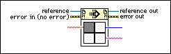

Call By Reference Node
Owning Palette: Application Control VIs and Functions
Requires: Base Development System
Calls the VI specified by reference. The reference VI must be a strictly typed VI reference.

 Add to the block diagram Add to the block diagram |
 Find on the palette Find on the palette |